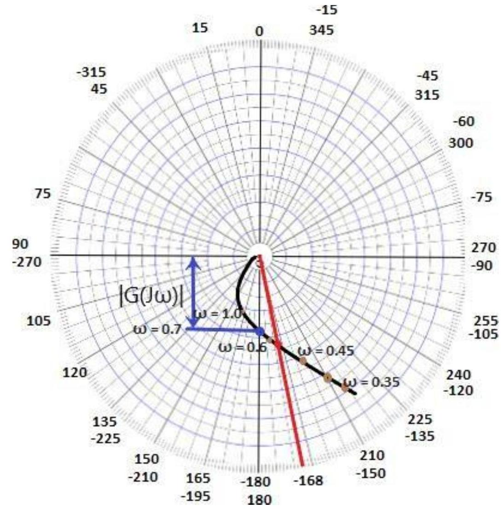
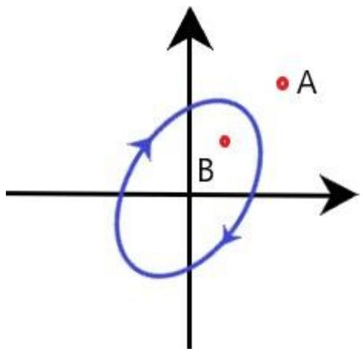
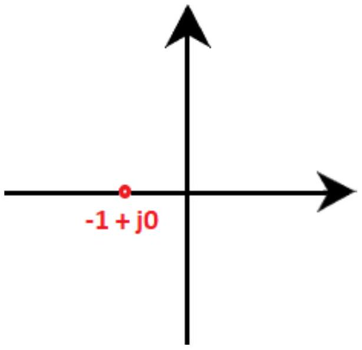

Unit-8: Frequency-Response Analysis & Bode Plot
Gain margin and phase margin of polar plot
The gain margin is Kg. It is given by:
$G_B$ is the value at a point (B) on the magnitude circle that cuts the 180 degree axis. The gain margin is positive if the point B lies within unit circle. Otherwise, it is negative.
The phase margin is given by:
Where,
Theta ($\theta$) is the phase angle of $G(j\omega)$ at the gain crossover frequency. The phase angle is calculated when the magnitude curve line intersects with the external unity circle. The line drawn from that intersection point to the end of the graph determines the angle theta. It can be positive or negative.
Both the phase margin and the gain margin can be better understood with the help of an example.
Examples
Let's discuss an example of the polar plot.
Example: The open loop transfer function of a unity feedback system is given by $G(s) = 1/[s(s + 1)(2s + 1)]$. Sketch the polar plot and also determine the gain margin and the phase margin.
Solution: The transfer function is given by:
The above function clearly depicts that the system is of type 1 and order 3. It is in the form:
Put, $s = j\omega$
The above transfer function in the form of magnitude and angle can be represented as:
If we consider the angle part in the numerator, we need to insert a negative sign due to the transition from the denominator to the numerator, as shown below:
Now, let us separate the magnitude and angle terms from the above equation.
We know the value of the above function at zero and infinity.
When, $\omega = 0$
$G(j\omega) = \infty \angle -90^\circ$
When, $\omega = \infty$
$G(j\omega) = 0\angle -270^\circ$
Let's find the magnitude and phase of $G(j\omega)$ at different frequencies.
| Radians/ second ($\omega$) | 0.35 | 0.5 | 0.6 | 0.7 | 1.0 |
|---|---|---|---|---|---|
| $|G(j\omega)|$ | 2.22 | 1.2 | 0.9 | 0.7 | 0.3 |
| Angle $G(j\omega)$ (degrees) | -144 | -162 | -171 | -180 | -198 |
The polar plot is shown below:
Here, every two lines have a gap of 15 degrees. We have specified both the positive and negative angle value at a point. It is based on the concept that the positive angles are measured anti-clockwise and the negative angles are measured clockwise. As we start from the 0 angle in the clockwise direction, we can notice the increase in the negative values of the angle. Similarly, as we begin from the 0 angle in the clockwise direction, we can notice the rise in the positive values of the angle.
Let's calculate the gain margin and the phase margin.
We can see in the polar plot that the magnitude circle cuts the 180 degree axis at point 0.7. Hence, it will be the value of $G_B$.
The gain margin is $Kg = 1/G_B$
$Kg = 1/0.7$
$Kg = 1.428$
The phase margin is given by:
$Y = 180^\circ + \theta$
We can clearly see the point marked with the red color. It is the intersection point of the magnitude curve with the unity circle. The line drawn from the intersection point (marked in red) determines the theta angle, which is equal to (-168) degrees.
So, phase angle is equal to
$Y = 180^\circ - 168^\circ$
$Y = 12$ degrees
Thus, the gain margin is 1.428 and the phase angle is 12 degrees.
Nyquist plot
The extension of the polar plot is known as the Nyquist plot. The frequency in the case of the Nyquist plot varies from -infinity to infinity. The primary difference between the polar plots and the Nyquist plot is that the polar plots are based on frequencies range from zero to infinity, while the Nyquist plot also deals with negative frequencies.
The Nyquist criteria help us determine the closed-loop system's stability from the frequency response of the open-loop poles and plot.
We know that F(s) is a function of s. The polynomial in the numerator and denominator of the system in terms of s can be represented as:
The roots of the numerator, when equated to zero, determine the zeroes of the system, and the root of the denominator determines the poles of the system. It means that the given function has m number of zeroes and n number of poles. The numerical value of n is usually greater or equal to m.
S in the function is a complex variable, and it is given by $\sigma + j\omega$. Thus, F(s) is also a complex function that can be represented in the form $u + jv$.
It means that for every point of s in the s-plane at which the F(s) is analytic, there exists a corresponding point in the F(s) plane. The function f(s) maps into the f(s) plane. There is a contour that maps on the contour on the other side.
In the Nyquist plot, we will detect the presence of the closed-loop system poles in the right half of the s-plane to determine the system's stability. It is because the Nyquist plot relates the open loop frequency response (given by $G(j\omega)H(j\omega)$) to the number of poles and zeroes of $1 + G(s)H(s)$ that lie in the right-half of the s-plane.
Contour in s-plane
The direction of the contour in the s-plane can either enclose or encircle the point in the s-plane, and the point can be a zero or a pole. First, let's discuss the concept of encircle and enclose because both terms are useful while implementing the Nyquist stability criterion.
Encircled: If a point is said to lie inside the closed path, it is said to be encircled. It is shown below:
Here, point B is encircled in the closed path in a clockwise direction, while the point A lies outside the path.
- Enclosed: If a point lies to the right side of path when the path is traversed in a specific direction, it is said to be enclosed by a closed path. Let's consider two closed path in the clockwise and anticlockwise direction, as shown below:
Figure 1
Figure 2
The shaded region represents the region enclosed by the closed path. In the first figure, point B lies to the right when traversed in the clockwise direction, while A does not. Thus, point B is said to be enclosed by a closed path.
Similarly, point A lies to the right when traversed in the anticlockwise direction in the second figure, while B does not. Thus, point A is said to be enclosed by a closed path.
Nyquist stability criteria
The closed loop transfer function is given by:
Where,
C(s) is the output of the given control system
R(s) in the input of the given control system
H(s) is the feedback path
G(s) is the forward path of a system
The characteristic equation of the system is given by the condition $1 + G(s)H(s) = 0$.
We know that $G(s)H(s)$ in terms of zeroes and poles is given by:
The value of m is less or equal to n. It means that for an ideal control system, the number of zeroes is always less than or equal to the number of poles in a given control system.
Let, $F(s) = 1 + G(s)H(s)$
Putting the value of $G(s)H(s)$ in the above equation, we get:
Thus, $z1', z2'... zn'$ are the zeroes of the function F(s).
Now, let's combine the values of $G(s)$, $1 + G(s)H(s)$ in the transfer function, which is given by:
$C(s)/R(s) = G(s)/(1 + G(s)H(s))$
$z1', z2', z3'$, and $zn'$ are the poles of the above transfer function.
The Nyquist stability criterion is based on the point -1 + j0 to determine the stability of the closed loop system. It is because the contour of the function F(s) with respect to the origin of the plane is same as the contour of the F(s) -1 plane with respect to the point -1 + j0.
The point -1 + j0 on the axis will appear as:
Let's discuss the Nyquist stability criteria in terms of encirclement, anticlockwise encircle, and clockwise encirclement.
Encirclement of point -1 + j0
There should be no encirclement of point -1 + j0. We know that the system is stable if the poles are present on the left half of the s-plane. Here, no encirclement means that the system is stable if there are no poles on the right side of the s-plane. The poles present on the right half of the s-plane makes the system unstable.
Anticlockwise encirclements of point -1 + j0
The anticlockwise encirclements of the point -1 + j0 are equal to the number of poles present in the right half of the s-plane. If such encirclements are not equal to the number of poles, the system becomes unstable.
For example,
A given system has two poles. For the system to be stable, the encirclements of the point -1 + j0 should also be two.
Clockwise encirclements of point -1 + j0
There should be no clockwise encirclements of the point -1 + j0 in the Nyquist plot to stabilize the system. If such encirclements are present in the plot, the system is always unstable.